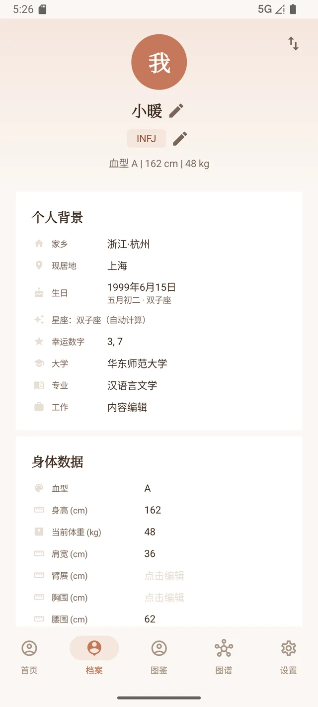
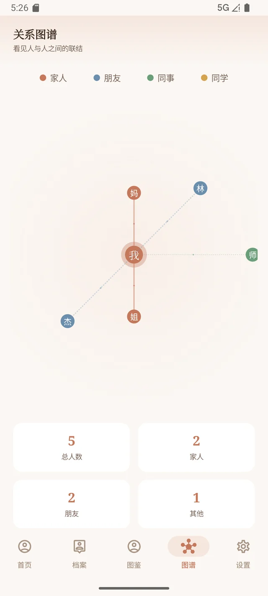
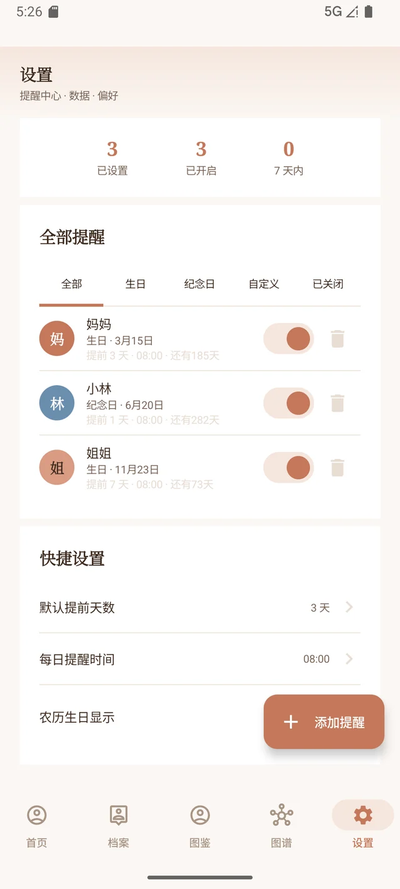

自我档案
13 个可排序模块：个人背景、身体数据、尺码、喜恶、性格、理想型、憧憬、愿望清单、人生轨迹、随想笔记、照片墙、纪念日。顺序自己调，深链直达某一块。
自我档案负责「我是谁」，人物图鉴负责「我身边有谁」，提醒中心负责「哪天不能忘」。
13 个可排序模块：个人背景、身体数据、尺码、喜恶、性格、理想型、憧憬、愿望清单、人生轨迹、随想笔记、照片墙、纪念日。顺序自己调，深链直达某一块。
双列卡片排人。按姓名、城市、MBTI、标签搜索；关系 + 亲密度 + 自定义标签三重筛选；最近查看等四种排序方式。
三层轨道的星形 Canvas 图，把「我」放在中心，家人、朋友、同事、同学各自成环。看清人和人之间的联结，点节点直接进详情。
生日、纪念日、自定义提醒。支持农历——每年自动换算成公历再排期，调度交给 WorkManager，本地通知，不依赖精确闹钟权限。
备份导出成 zip（含照片本体），写到你自己选的位置；导入恢复前自动留一份安全备份。删除先进回收站，留 30 天。
关系分布环形图、本月重要日子日历条；桌面放一枚「近期提醒」小组件，抬眼就能看到下一个日子。
另外还有：全局搜索、深色模式（300ms 过渡）、4 档字体缩放、生物识别应用锁（失败降级 + 锁定倒计时）。应用锁配 allowBackup=false，敏感档案不进系统云备份——代价是换手机前记得先导出备份。
截图来自真机模拟运行，界面内数据均为内置种子数据。



打开的是仓库根目录，不是 app/。Trust Gradle Project，等首次 Sync（5-10 分钟）。
Windows 用 .\gradlew.bat，macOS / Linux 用 ./gradlew。命令行没有 JDK 时，把 JAVA_HOME 指向 Android Studio 自带的 JBR（JDK 17）。
./gradlew :app:assembleDebug
Debug 包 → app/build/outputs/apk/debug/
./gradlew :app:testDebugUnitTest
单元测试（JUnit 5）
./gradlew :app:lintDebug
Lint 报告 → app/build/reports/
./gradlew :app:assembleRelease
正式包（minify + shrink + 签名）。签名读环境变量 SELF_RELEASE_STORE_FILE / _STORE_PASSWORD / _KEY_ALIAS / _KEY_PASSWORD；未配置时产出 unsigned 包。
命令行要用 JDK 17；没有 JDK 就用 AS 自带 JBR。单测 import 必须是 org.junit.jupiter.api.Test，混用 JUnit 4 会静默 skip——build 通过但 test-results 里没有 xml。
settings.gradle.kts 已配阿里云镜像，AGP / Kotlin / Compose / Hilt 全走镜像，比直连官方源快 5-10 倍；wrapper 也切了国内镜像，首次 sync 下载 gradle 二进制包从几十秒压到几秒。
第三方版本统一收在 gradle/libs.versions.toml，不在构建脚本里散写。
JUnit 5 + mockk 跑纯逻辑（农历换算、提醒计算、备份序列化、软删除、路由隔离），androidTest 覆盖真机行为。GitHub Actions 每次推送跑 assembleDebug + testDebugUnitTest + lintDebug。
这个项目的每一步都留了字：为什么这么设计、先做哪一步、做完没做完。